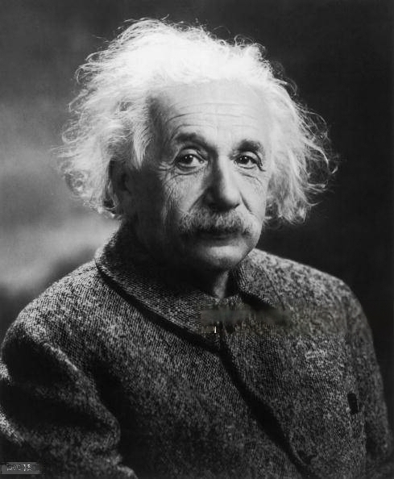

Albert Einstein is best known for developing the theory of relativity, but he also made important contributions to the development of the theory of quantum mechanics. Relativity and quantum mechanics are the two pillars of modern physics.
Albert Einstein
Theoretical physicist

Biography
Albert Einstein was born in Ulm, in the Kingdom of Württemberg in the German Empire, on 14 March 1879 into a family of secular Ashkenazi Jews.
Einstein excelled at math and physics from a young age, reaching a mathematical level years ahead of his peers. The 12-year-old Einstein taught himself algebra and Euclidean geometry over a single summer.Einstein also independently discovered his own original proof of the Pythagorean theorem aged 12.A family tutor Max Talmud says that after he had given the 12-year-old Einstein a geometry textbook, after a short time "[Einstein] had worked through the whole book. He thereupon devoted himself to higher mathematics ... Soon the flight of his mathematical genius was so high I could not follow."His passion for geometry and algebra led the 12-year-old to become convinced that nature could be understood as a "mathematical structure".Einstein started teaching himself calculus at 12, and as a 14-year-old he says he had "mastered integral and differential calculus".
At the age of 13, when he had become more seriously interested in philosophy (and music),Einstein was introduced to Kant's Critique of Pure Reason. Kant became his favorite philosopher, his tutor stating: "At the time he was still a child, only thirteen years old, yet Kant's works, incomprehensible to ordinary mortals, seemed to be clear to him."
In 1895, at the age of 16, Einstein took the entrance examinations for the Swiss Federal polytechnic school in Zurich (later the Eidgenössische Technische Hochschule, ETH). He failed to reach the required standard in the general part of the examination,but obtained exceptional grades in physics and mathematics.
At 17, he enrolled in the four-year mathematics and physics teaching diploma program at the Federal polytechnic school. Marie Winteler, who was a year older, moved to Olsberg, Switzerland, for a teaching post.
On 17 April 1955, Einstein experienced internal bleeding caused by the rupture of an abdominal aortic aneurysm, He died in the early the next morning at the age of 76, having continued to work until near the end.
Learn more about Albert Einstein“Knowledge is so important but imagination is more than that.”